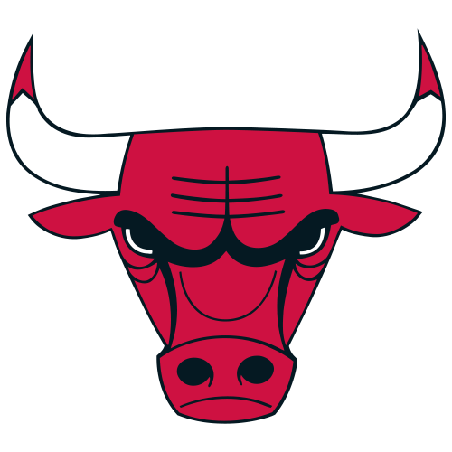

O Chicago Bulls é uma das franquias mais icônicas da NBA, especialmente conhecida por seu domínio na década de 1990. Fundado em 1966, o time se tornou sinônimo de excelência no basquete e marcou uma era com suas conquistas e jogadores lendários.
Os Bulls ganharam destaque internacional durante a década de 1990, quando conquistaram seis campeonatos da NBA em oito anos (1991-1993 e 1996-1998). Esse sucesso foi impulsionado pela presença de Michael Jordan, amplamente considerado o maior jogador de basquete de todos os tempos, e pelo técnico Phil Jackson, que implementou o famoso "triângulo ofensivo".
Michael Jordan foi a peça central do sucesso dos Bulls. Junto com Scottie Pippen e Dennis Rodman, Jordan liderou os Bulls a dois "three-peats" (três títulos consecutivos). Durante esse período, Jordan conquistou cinco prêmios de MVP da temporada regular e seis prêmios de MVP das Finais, solidificando seu legado como uma lenda do esporte.
A equipe dos Bulls dos anos 90 também contou com jogadores-chave como Horace Grant, Toni Kukoč, Steve Kerr e Ron Harper, que desempenharam papéis cruciais nas conquistas dos títulos. Phil Jackson, com sua abordagem estratégica e gestão de equipe, foi fundamental para maximizar o talento e a coesão da equipe.
Após a aposentadoria de Jordan em 1998, os Bulls passaram por um período de reconstrução e dificuldades. Apesar de alguns momentos promissores, como a ascensão de Derrick Rose, que se tornou o MVP mais jovem da história da NBA em 2011, a equipe não conseguiu replicar o sucesso dos anos 90.
Derrick Rose trouxe esperança aos fãs dos Bulls com seu estilo de jogo explosivo e habilidades excepcionais. No entanto, lesões frequentes prejudicaram sua carreira e impediram a equipe de alcançar seu potencial máximo. Nos últimos anos, os Bulls têm focado na reconstrução e no desenvolvimento de jovens talentos, buscando voltar ao cenário competitivo da NBA.
Os Bulls são conhecidos por sua cultura de trabalho duro e competitividade. O United Center, onde a equipe joga, é famoso por seu ambiente energético, especialmente quando a música tema "Sirius" dos Alan Parsons Project toca durante as apresentações dos jogadores.
O impacto dos Bulls na NBA e na cultura popular é imenso. Durante os anos 90, a popularidade de Michael Jordan e os Bulls ajudou a globalizar o basquete, tornando a NBA um fenômeno mundial. O legado de Jordan, em particular, continua a influenciar jogadores e fãs ao redor do mundo.
Os Bulls também estão envolvidos em diversas iniciativas comunitárias através da Chicago Bulls Charities. A fundação apoia programas que promovem educação, saúde e bem-estar social na comunidade de Chicago.
Com uma nova geração de jogadores talentosos e uma abordagem renovada na gestão da equipe, os Bulls estão focados em reconstruir uma equipe competitiva. O objetivo é retornar ao topo da NBA e adicionar mais títulos ao seu impressionante histórico
Em resumo, o Chicago Bulls é uma franquia com uma história rica e um legado duradouro, marcado por conquistas extraordinárias, jogadores lendários e um impacto profundo no basquete e na cultura popular global.
Celtics Lakers Warriors